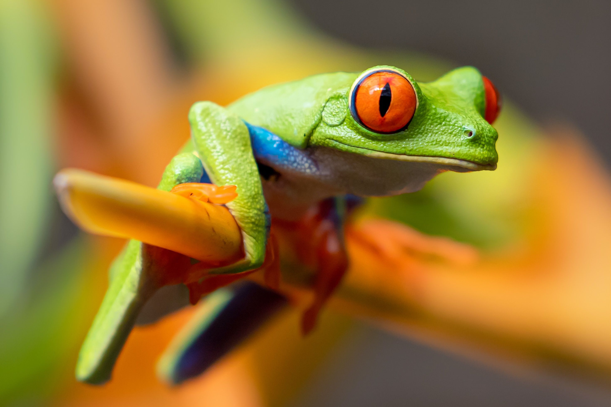

These iconic rain-forest amphibians sleep by day stuck to leaf-bottoms with their eyes closed and body markings covered. When disturbed, they flash their bulging red eyes and reveal their huge, webbed orange feet and bright blue-and-yellow flanks. This technique, called startle coloration, may give a bird or snake pause, offering a precious instant for the frog to spring to safety.
Their neon-green bodies may play a similar role in thwarting predators. Many of the animals that eat red-eyed tree frogs are nocturnal hunters that use keen eyesight to find prey. The shocking colors of this frog may over-stimulate a predator's eyes, creating a confusing ghost image that remains behind as the frog jumps away.